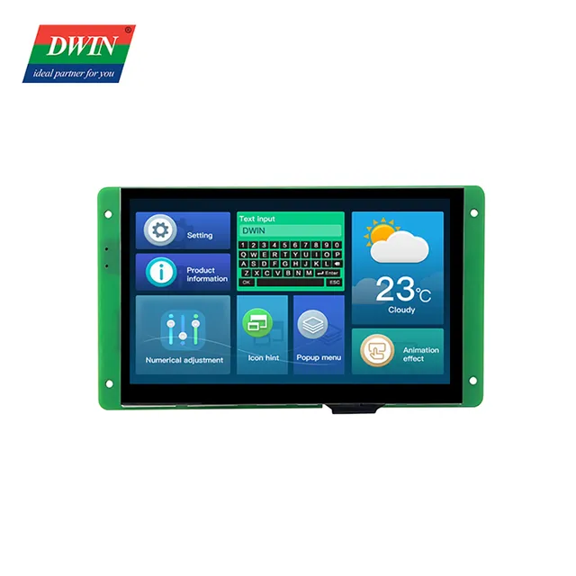

DWIN 7-дюймовый ЖК-модуль 800*480 RS232/TTL HMI коммерческий сенсорный экран Smart UART TFT дисплей

-------------------------------------------------------------------------------------------------------------------------------
На основе T5L0, под управлением системы DGUS II, коммерческого класса.;
7,0 дюймов, разрешение 800*480 пикселей, 262K цветов, TV-TN-TFT-LCD.
Отсутствие экрана касания/сопротивляющийся экран касания/емкостный экран касания Опционный;
Интерфейс TTL/CMOS; Соединительный провод 10 контактов _ 1,0 мм;
Загрузка через SD-карту или онлайн-последовательный порт;
Простая в использовании разработка графического интерфейса DWIN DGUS V7.6. Навыки кодирования не требуются;
Двойная система разработки: DGUSⅡ/TA (набор инструкций);
Угол наблюдения ТВ, 70 °/70 °/40 °/30 ° (Л/Р/У/Д);
Благодаря двухъядерным графическим интерфейсом и ОС, графическим интерфейсом с богатым управлением, ядро ОС DWIN открыто для пользователя для второй разработки через язык ОС DWIN или KELI C51.
---------------------------------------------------------------------------
Характеристики
Название бренда
DWIN
Номер модели
DMG80480C070_04W
Происхождение
Китай
Тип
TN
Индивидуальное изготовление
Да
Единица измерения
штука/штуки
Количество
1
Color
262K Color
Active Area (A.A.)
154.08mm (W)x85.92mm (H)
Resolution
800*480
Power supply
5V 1A DC
Working Temperature
-20℃~70℃
Size
7 Inch
Grade
Commercial graed
Panel Type
TV-TN
Viewing Angle
70/70/40/30(L/R/U/D)
Backlight
LED
Brightness
200Nit